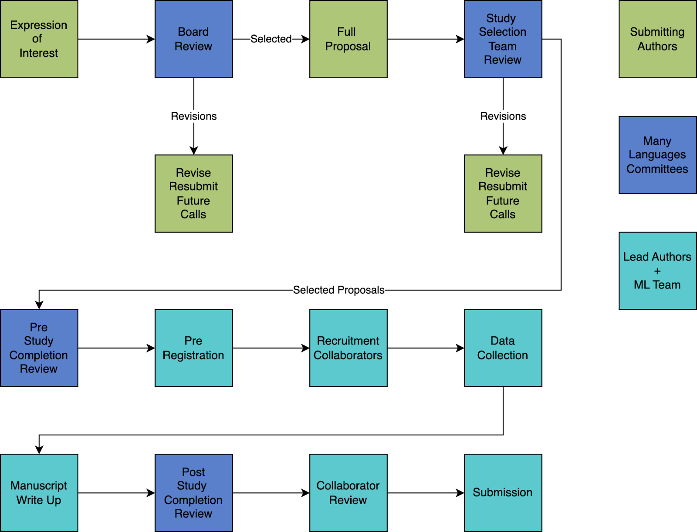
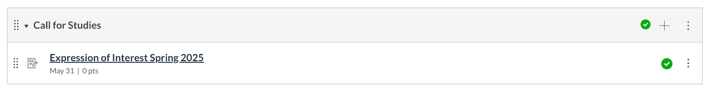
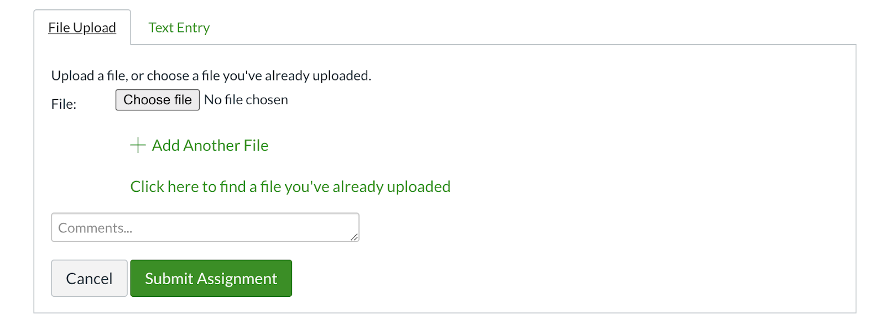

Call for Projects
Call for Studies
Check out our current call for studies (Google Docs Version).
Replicating Experimental Linguistic Phenomena across ManyLanguages
Deadlines
A two-page Expression-of-Interest statement is due on the 31st of May 2025.
The deadline for the submission of Full Proposals will be the 15th of September 2025. See other deadlines at the bottom of this document.
Overview
ManyLanguages welcomes study proposals to experimentally test the generalizability of linguistic phenomena. We provide some examples of large scale studies on Canvas with the special note that this list should not indicate the breadth or focus of what we are looking for - very few of these exist that we are aware of, so we want to solicit studies!
ManyLanguages is a globally distributed network of language science laboratories that coordinates data collection for democratically selected studies. Our mission is to facilitate the connection between language science researchers to diversify the languages, participants, researchers, and projects represented in the language sciences. We will facilitate the collection of evidence across the language sciences by supporting a distributed laboratory network that is ongoing, diverse, and inclusive. We embrace open science principles by sharing collected data, materials, translations, and other research outputs from the network. We strive to engage research across a broad spectrum of language sciences creating an inclusive and diverse environment for ideas, investigation, and participation.
Selected proposals will receive access to your own online infrastructure on the open source platform Canvas, curated and managed by ManyLanguages. Canvas allows you to organise relevant information in a consistent way and offers a consistent communication channel for all members of your project. Having such an infrastructure in place allows for efficient workflows and communication.
ManyLanguages will support the project on all steps along the way. We organise expert feedback on different stages of supported projects. For example, a pre-study review committee will give feedback on project proposals which helps improve proposals at the initial stages of a project. A post-study review committee will help ensure that all results of the research activity (e.g. data, scripts, materials, meta-data) are transparently shared in a consistent and user-friendly way.
You will receive support on best practices for big-team science projects, as well as support for necessary components of a study you may not have access to (i.e., specialised analysis expertise or programming).
Being part of ManyLanguages, project leads will have access to a large community of researchers across the globe covering different types of expertise.
Overview of selection and study process
Proposal Selection
This first call invites proposals for experimental replications of linguistic phenomena scaled up to many languages. All proposals that fit this call will have the same requirements and will be given equal consideration during the project selection process.
ManyLanguages projects are selected using a multi-staged review process: As a first step, researchers submit a two-page expression of interest statement that outlines the project scope, a short description of how data will be collected, how data collection will be coordinated across labs, how the method will be scaled to multiple varieties/languages and which varieties/languages will be targeted.
Please submit your expression of interest on Canvas. You can use this direct link (you must be logged in for this link to work). You can find the current call for studies on the Modules page (see below for instructions if you are new to Canvas). Statements must not exceed two pages (single spaced).
Expression of interest statements will be reviewed by the ManyLanguages leadership group and assessed for feasibility and quality. After assessment, researchers will either be invited to submit a detailed proposal or will receive feedback on why the selection group considered the proposal not suitable for ManyLanguages (alongside offers how to guide the researchers in developing a more suitable project for later calls).
After being invited to submit full proposals, researchers submit detailed proposals for consideration. Proposals for this round resemble a preregistration for hypothesis testing research (e.g., Roettger, 2021 for an overview with examples from the language sciences) which contain a theoretical introduction, research question, and hypothesis, a description of the planned sample and methods, and an analysis plan to test those hypotheses (see Submission Requirements).
The proposals then undergo several rounds of review, overseen by the ManyLanguages Study Selection Committee. First, each proposal is screened for feasibility given the ManyLanguages current capacity and resources (initial feasibility and quality review), with a special focus on considering scalability to a diverse set of sites and languages. For instance, a proposal that requires dozens of collection sites with fMRI machines is likely to be rejected based on general infeasibility as well as lack of scalability (it excludes many labs without access to such expensive instruments). Simultaneously, the Study Selection Committee screens out submissions deemed low quality. Proposals that pass this screening are then sent out for peer review. Each proposal is reviewed by 5-10 reviewers, consisting of both ManyLanguages members and external experts. These reviewers are identified based on their ethical, methodological, and/or theoretical expertise related to a given proposal. All submissions are additionally rated quantitatively by members of the ManyLanguages network (Network rating). The Study Selection Committee then synthesises the reviewer and network feedback to select projects for ManyLanguages to pursue (Study selection decision). See Evaluation Criteria section for more details and anticipated timeline.
Submission Requirements for full proposals
The following manuscript components are required for all full proposals for ManyLanguages first call:
Cover Page, including the title of the study, date of the latest draft, and keywords
Abstract of up to 200 words
Main body submission text (no word limit)
A version of the submission with a cover page included
A masked version of the submission without the cover page
References
Supplementary materials (e.g. materials, scripts etc.)
The following guidelines are intended to assist you in the preparation of your proposal submission to ManyLanguages. Submissions typically include a description of the key background literature and motivation for the study, hypotheses, study procedures, scalability plan, proposed statistical analysis plan, a statistical power analysis, and pilot data (wherever applicable):
Introduction
A review of the relevant literature that motivates the research question and a full description of the study aims and hypotheses.
Method
A full description of proposed sample characteristics, including criteria for data inclusion and exclusion (e.g., outlier extraction). Procedures for objectively defining exclusion criteria caused by technical errors or for any other reasons must be specified, including details of how and under what conditions data would be replaced.
A description of study procedures in sufficient detail to allow another researcher to repeat the methodology exactly, without requiring further information.
Moreover, the proposal must include a scalability plan which should answer the following questions: Which languages/ language families can be targeted by the project and how can the project ensure scalability to a typologically diverse sample of languages? If scalability is limited, how is the choice of language/s that the authors propose to investigate determined? Why are languages excluded that exhibit similar linguistic phenomena? In case linguistic resources are unavailable in a language that could have formed a part of the study, are there plans to create these resources?
Analysis Plan
Proposed analysis pipeline, including all preprocessing steps, and a precise description of all planned analyses, including appropriate correction for multiple comparisons. Specify all covariates or regressors. Specify analysis decisions that are contingent on the outcome of prior analyses. You can propose the general type of analysis for your research study. If your proposal is selected, an analyst reviewer may suggest more complex designs to account for the differences in labs, countries, or other variables found in big-team designs. You will receive support for these suggestions.
Studies involving frequentist inference should include a power analysis for the traditional type of analysis for your design. You can use programs like G*Power, r packages such as simr, or customized simulation code to estimate the number of participants a traditional study would need. Estimated effect sizes should be justified with reference to the existing literature or theory. Because publication bias inflates published estimates of effect size, power analysis should be based on the lowest available or meaningful estimate of the effect size.
For studies involving analyses with Bayes factors, the predictions of the theory must be specified so that a Bayes factor can be calculated. Authors should indicate what distribution will be used to represent the predictions of the theory, what priors are used and how its parameters will be specified.
Supplemental Materials
If applicable, include questionnaires, stimuli, and materials needed to conduct the study. Pilot data can be included to establish proof of concept, effect size estimations, or feasibility of proposed methods. Simulated data and analysis scripts are recommended to provide clarity about the exclusion criteria and analysis plan.
Please also describe within the supplemental materials the details of what open research practices will be followed and how. This section should include information about plans for data sharing, analysis code sharing, pre-print use, and Registered Report manuscript submission and/or pre-registration. Other practices which are common in ManyLanguages studies are open materials, use of open source tools, and open research workflows.
These guidelines were adapted from https://osf.io/pukzy.
Evaluation Criteria
We anticipate that two studies will be selected and implemented through this call. Appropriateness and feasibility are two of the key criteria for evaluation. Your full proposal should clearly state how your project aligns with the goals of the call and discuss why your research topic would specifically benefit from data collection across ManyLanguages (e.g., theoretical reasons to predict typological variation).
Upon submission of your full proposal, you will be asked to provide details about your project to categorise the submission and help the study selection committee assess its fit and feasibility. These items are listed below (see also the submission form link).
What type of research are you proposing?
What category of investigation is your project?
Target number of languages/varieties
Target number of data collection sites
Target number of participants per data collection sites
Does your project require specialised equipment (e.g., eye-tracking, EEG) or proprietary experimental software (e.g., E-Prime) to be used at the data collection sites?
- If yes: Please explain and justify the use of specialised equipment or proprietary software in your research. Can you provide all the collection sites with these resources? Do you only need a minority of sites to participate who already have these resources?
Can experimental materials and analysis scripts for your project be easily shared and made publicly available?
- If no: Please explain and justify why your materials or analysis scripts cannot be publicly shared.
Does your project require “hard-to reach” samples (e.g., children, traditionally marginalised group members, clinical populations, speakers of endangered languages etc.)?
- If yes: Please explain and justify your use of “hard to reach” samples in your research. Do you only need a minority of sites to participate who already have access to these populations? If not, how will they recruit participants? Does research with this population involve additional ethical considerations?
Does the study expose participants to more risk than they would encounter in everyday life?
- If yes: Please explain and justify the potential risk to individuals who participate in your proposed study.
In evaluating submissions, we will prioritise projects whose designs are most well suited for promoting generalizability. In particular, we will prioritise studies that seek cross-linguistic samples (as opposed to studies that wish to sample from one or a few languages). For this call, we further prioritise studies with very high statistical power, and studies that are more strongly grounded in previous research. All of these criteria are intended to maximise our chances of producing generalizable insights on phenomena-of-interest.
How To Submit (Both Expression of Interest and Full Proposals)
To submit a study, you should first join the ManyLanguages member website to officially become a member. The steps for registration can be found here:
https://many-languages.com/join.html
You will submit your proposal manuscript (once with cover page, once with masked cover page) using the Canvas online system. You can use this direct link (you must be logged in for this link to work). You can find the current call for studies on the Modules page:

To start > click Submit Assignment:

Click >>Choose file<< to upload files.
Click Submit Assignment to formally submit. Once submitted, you can review your submission on the assignment page.
You can click on submission details to review the documents. You can use re-submit to correct your submission if you find a mistake.
Timeline
Expression-of-Interest deadline: 31st May 2025
Initial feasibility and quality review: 15th June 2025
Full Proposal deadline: 15th September 2025
Reviewer selection: 15th October 2025
Network rating solicitation: 15th October 2025
Review submission deadline: 15th January 2026
Network rating deadline: 15th January 2026
Study selection decision: 30th January 2026
Possible submission outcomes include “desk rejection” upon initial review, rejection upon full review, provisional acceptance, or an invitation to revise and resubmit. Following a successful period of needs assessment, preparation, personnel identification, lab recruitment, and pre-registration, provisionally selected studies will commence working with pre-study review teams in February 2026.